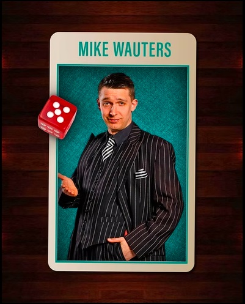
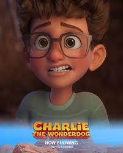
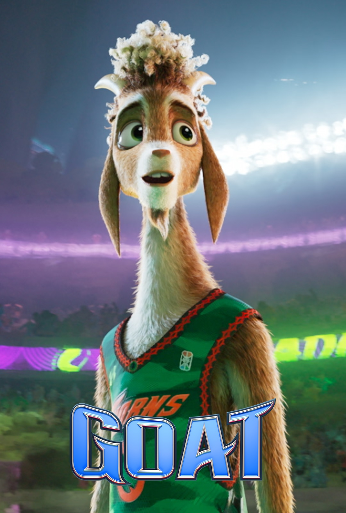

Mike vertolkt de rol van Mr. Lijkens in de theatervoorstelling Cluedo van Loge10.

James spreekt de Vlaamse stem in van Danny in Charlie The Wonderdog.

Billie, James en Mike verzorgen samen een aantal Vlaamse stemmen in de animatiefilm GOAT.